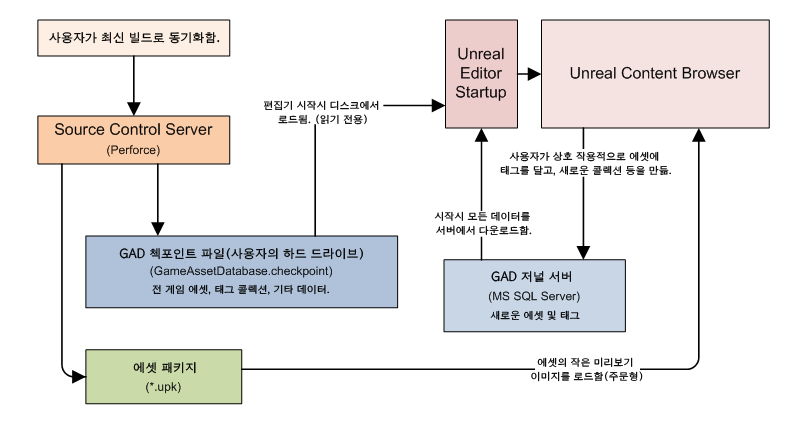
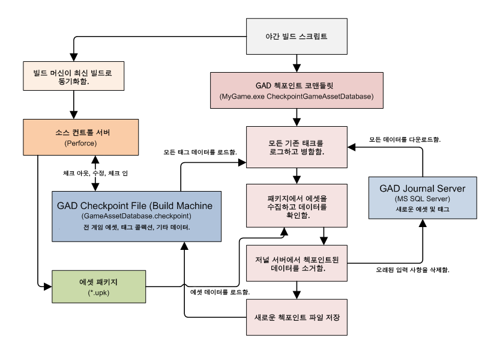
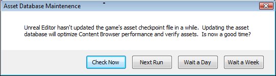

UDN
Search public documentation:
ContentBrowserDatabaseKR
English Translation
日本語訳
中国翻译
Interested in the Unreal Engine?
Visit the Unreal Technology site.
Looking for jobs and company info?
Check out the Epic games site.
Questions about support via UDN?
Contact the UDN Staff
日本語訳
中国翻译
Interested in the Unreal Engine?
Visit the Unreal Technology site.
Looking for jobs and company info?
Check out the Epic games site.
Questions about support via UDN?
Contact the UDN Staff
콘텐츠 브라우저 데이터베이스
문서 변경내역: Mike Fricker 작성. Richard Nalezynski 업데이트.
개요
게임 애셋 데이터베이스가 필요한 이유
- 로드 여부와 상관없이 모든 콘텐츠를 즉시 검색 가능합니다.
- 애셋에 태그를 추가하거나 콜렉션에 넣기 위해 패키지를 체크 아웃시킬 필요가 없습니다.
- 로드되지 않은 애셋을 포함하여 모든 게임 애셋이 썸네일로 표시됩니다.
- 모든 태그 데이터도 올바르게 소스 콘트롤(, 즉 롤백 등이) 가능합니다.
콘텐츠 브라우저 데이터베이스 상호작용

그밖에도, 라이브 서버를 사용하지 않고 한정된 기능을 허용하는 “오프라인 모드”로 에디터를 실행하는 것이 가능합니다. 자세한 정보는 이 페이지의 거의 끝부분에 있는 “오프라인 모드” 부분을 참고하십시오.빌드 시스템 데이터베이스 상호 작용

데이터베이스 설정
- 여러분 게임에 대한 새로운 Checkpoint 파일을 생성하기 위해 커맨드렛을 실행합니다.
- 애셋 데이터베이스를 ‘체크포인트’하고 소스 콘트롤에 파일을 업데이트 하기 위해 일반 빌드 과정을 설정합니다. (저희는 이 과정을 자동으로 매일 밤 실행합니다.)
- journal server 의 설치 및 구성을 실행합니다.
- 각 게임의 에디터 구성 파일에 있는 데이터베이스/브랜치의 설정 사항을 설정합니다.
- 선택 사항으로 모든 애셋 패키지를 재저장하여 자동으로 썸네일을 생성하도록 합니다(필요시).
작업 사항이 많아 보임...
- 사용자는 게임 콘텐츠의 전체를 탐색할 수 없게 됩니다. 로드된 애셋만을 검색할 수 있게 되고 또한 오직 로드된 애셋과 상호 작용할 수 있습니다.
- 일부 메타 데이터 유형을 사용할 수 없게 됩니다(예. 애셋에 날짜 기록하는 것이 추가됨.)
- 모든 패키지 및 디렉터리를 볼 수 있게 된다는 것을 제외하고는 Generic Browser에서와 유사한 사용자 경험을 하실 것입니다.
- 사용자가 자산을 태그하거나 태그를 사용하여 검색할 수 없게 됩니다 (오프라인 모드에서는 예외).
- 사용자가 콜렉션에, 심지어 private 콜렉션에도, 자산을 배치할 수 없습니다 (오프라인 모드에서는 예외).
- 사용자가 태그 및 콜렉션을 다른 사람들과 공유할 수 없습니다.
- 다양한 “라이브” 기능을 이용할 수 없게 됩니다.
체크포인트 파일 만들기
- 최신 게임 콘텐츠로 동기화됨을 확인합니다.
- 다음 checkpoint commandlet을 실행합니다.
- MyGame.exe CheckpointGameAssetDatabase
- (전 게임 콘텐츠를 다루는데 시간이 걸릴 수 있습니다.)
- 이게 전부입니다! 이제 이 게임에 유효한 checkpoint file을 완성하였습니다.
- 에디터를 로드하면 이제 콘텐츠 브라우저 를 사용하여 게임의 모든 애셋을 탐색할 수 있게됩니다.
- 일반적으로 이 파일을 소스 콘트롤로 체크하여야 합니다. 이것에 대한 자세한 정보는 다음 섹션에서 좀 더 알아보도록 하겠습니다.
게임 콘텐츠에 정규적으로 체크포인트 하기
- 매일 새벽 3시경 저희 빌드 시스템(Controller)을 실행하는 컴퓨터는 다음을 수행하는 빌드 스크립트(CheckpointGAD.build)를 실행합니다.
- 각 게임당(또는 게임 브랜치):
- 최종 성공적인 엔진 빌드 (바이너리 포함)로 동기화 합니다. 종종 최종 성공적인 빌드는 바로 직전에 완성됩니다.
- 헤드 리비전으로 모든 게임 콘텐츠를 동기화 (오직 게임 콘텐츠만)합니다. 이렇게 하는 이유는 약간 오랜된 엔진 빌드를 실행할지라도 asset checkpoint가 가능한 최신이 되게 하기 위함입니다.
- 게임의 GAD checkpoint file (GameAssetDatabase.checkpoint) 체크 아웃 함.
- Checkpoint file을 업데이트 하기 위해 checkpoint commandlet 실행하기.
- MyGame.exe CheckpointGameAssetDatabase
- 빌드 시스템 엔진에 의해 커맨드렛의 출력에 있을 수 있는 철자 오류가 검사됩니다. 만약 무언가 잘못되면 체크포인트는 실패로 돌아가고 파일은 원 상태로 복귀되고 해당 담당자에게 이메일이 발송됩니다.
- 업데이트된 GAD checkpoint file*(GameAssetDatabase.checkpoint) *제출하기.
- 각 게임당(또는 게임 브랜치):
저널 서버 설정하기
MS SQL Server 설치하기
- 설치 프로그램이 반드시 미리 설치해야 하는 몇가지 요구사양에 대해 알려드릴 것입니다(예. Windows Installer, Windows Powershell.) 안내시 그 프로그램들을 먼저 설치하십시오.
- MS SQL Server Express 2008의 경우 기본 설치 설정을 사용하여 설치하실 수 있습니다. 응용 프로그램의 다른 버전을 사용하신다면 서버와 설치와 함께 MS SQL Server Management Studio도 설치하셔서 설정 사항을 손 쉽게 편집/감사할 수 있게 하십시오.
- Server Admin 이름을 입력하라고 하면 여러분 고유의 사용자 이름을 사용하거나 어떤 이름을 사용해야 할지 여러분의 IT 부서에 문의하십시오.
- 데이터베이스의 이름은 여러분이 원하는시는 대로 명명할 수 있으나 나중에 언리얼 에디터 구성시 필요하기 때문에 명명한 이름을 메모해 두십시오.
- 본 예제에서는 SQLEXPRESS 라는 기본 데이터베이스 이름을 사용하겠습니다.
자동 저널 서버 설정 (권장)
- 저널 서버 인스턴스를 생성하려면 CreateContentJournal.sql 스크립트를 사용하십시오.
- 본 스크립트는 다음의 UE3 소스 드롭에서 찾으실 수 있습니다. /Development/Src/Engine/SQL/CreateContentJournal.sql
- sqlcmd.exe 커맨드 라인 응용프로그램을 사용하여서 스크립트를 실행하십시오.
- 서버를 실행하고 있는 컴퓨터의 이름과 더불어 서버의 이름도 전달하셔야 합니다(기본 서버 인스턴스인 경우를 제외하고)
- 또한 UDN으로 부터 CreateContentJournal.sql 파일의 경로 및 파일 이름을 전달해야 합니다.
- 예를 들면 sqlcmd -S Computer_Name\Server_Name -i CreateContentJournal.sql
- 모든 것이 순조롭게 진행되면 오류 메시지를 발견하시지 않을 것이고 저널 서버의 준비가 완성될 것입니다.
- 주의: 일반 Windows의 인증 과정이 기본으로 여러분의 새 서버에 의해 활성화되지만 여러분 IT 부서와 협의하여 여러분 팀원의 컴퓨터가 직접 연결될 수 있게 모든 사항이 구성 되었는지를 확인하십시오.
- 만약 수동으로 서버 인스턴스를 생성할 필요가 있는 경우 다음 섹션에 나와 있는 절차를 따라 주십시오.
수동 저널 서버 설정(필요할 시)
- MS SQL Server Management를 로드 하고 여러분 데이터베이스에 연결하십시오.
- 왼쪽 Object Explorer에서 "Databases" 를 오른쪽 클릭 하고 "New Database..." 를 클릭하십시오. "New Database" 대화창이 나타날 것입니다.
- "Database name" 을 ContentJournal 로 설정합니다.
- "OK" 를 눌러 대화상자를 닫고 새로운 데이터베이스를 저장합니다.
- Object Explorer의 "Databases" 하에 있는 "ContentJournal" 를 확장하여 구성 요소를 확인합니다(Tables, Views, 등등.).
- Object Explorer의 "ContentJournal" 하에 있는 "Tables" 를 오른쪽 클릭하여 "New Table..." 을 클릭합니다. 응용 프로그램의 콘텐츠 지역으로 테이블 디자이너가 열립니다.
- 테이블의 열을 다음과 같이 구성합니다.
- 첫째 열:
- "Column Name" 을 DatabaseIndex 로 설정.
- "Data Type" 을 int 로 설정.
- "Allow Nulls" 를 No (선택 안함)로 설정.
- 첫째 열의 속성:
- "Identity Specification -> (Is Identity)" 를 Yes 로 설정.
- 첫째 열의 ("DatabaseIndex")를 오른쪽 클릭하여 "Set Primary Key" 를 클릭합니다.
- 두번째 열:
- "Column Name" 을 Text 로 설정.
- "Data Type" 을 nvarchar(MAX) 로 설정.
- "Allow Nulls" 를 No (선택 안함)로 설정.
- 첫째 열:
- 새로운 테이블을 저장하려면 Ctrl+S 를 누릅니다. 저장 대화상자가 열립니다.
- 새로운 테이블을 Entries 라는 이름으로 저장합니다.
- 테이블의 열을 다음과 같이 구성합니다.
- 저널 서버 설치가 완성되었고 이제 작동하게 됩니다.
- 주의: 일반 Windows의 인증 과정이 기본으로 여러분의 새 서버에 의해 활성화되지만 여러분 IT 부서와 협의하여 여러분 팀원의 컴퓨터가 직접 연결될 수 있게 모든 사항이 구성 되었는지를 확인하십시오.
언리얼 에디터 구성하기
- 텍스트 에디터에서 BaseEditor.ini 을 엽니다. (/Engine/Config/BaseEditor.ini)
- 특정 게임에 대한 구체적인 설정이 필요한 경우, 해당 변경 사항을 /MyGame/Config/DefaultEditor.ini 에서 하실 수 있습니다.
- .ini 파일의 [GameAssetDatabase] 섹션의 위치를 찾습니다. 존재하지 않는다면 본 섹션에서 만드십시오.
- JournalServer 를 저널 SQL 서버의 경로로 설정합니다(Computer_Name\SQL_Server_Name)
- 예를 들면 JournalServer=ServerComputer\MYSERVERNAME
- 만약 여러분의 서버가 원격 컴퓨터에 있는 _기본 SQL 서버 인스턴스_인 경우 서버 이름을 입력하지 않아도 됩니다.
- 예를 들면 JournalServer=ServerComputer
- BranchName 여러분 게임의 디폿 경로 에 적절하게 설정합니다.
- 예를 들면 BranchName=Main
- 브랜치 이름은 여러분 생각에 적절하다고 생각되는 이름을 사용할 수 있지만 반드시 알파벳과 숫자만 사용해야 합니다.
- 브랜치 이름은 모든 저널 엔트리에 부착되므로 어느 정도 간략한 길이로 유지합니다.
- 대상의 .ini 설정을 하는 동안 콘텐츠 브라우저의 태그와 콜렉션의 생성과 삭제 허용 여부를 설정할 수 있는 몇 가지 사용자 선택 사항이 있습니다. 다음을 설정하여 여러분의 아트 개발자 및 기술 아티시트들이 태그 생성을 할 수 있게 하여야 합니다.
- MyGameEditorUserSettings.ini 에서 [ContentBrowserSecurity] 에 대한 섹션을 추가합니다.
- 이 섹션하에 bIsUserTagAdmin=True 로 설정하고 bIsUserCollectionsAdmin=true 로 설정합니다.
- 이것은 진정한 안전 시스템의 구축이 아니라 사용자들의 우발적인 데이터 삭제를 방지해 줍니다.
작은 애셋에 대한 썸네일 생성하기
고급 토픽
오프라인 모드
콘텐츠 브라우저를 SQL 접속이 필요없지만 태깅이나 콜렉션은 계속 사용할 수 있는 “Offline Mode(오프라인 모드)”로 실행할 수도 있습니다. 오프라인 모드를 사용하려면오프라인 저널 경보
에디터가 최초로 실행되면, date 필드인 "UserJournalUpdateAlarm" 이 UTEditorUserSettings.ini 에 추가되어 향후 7일로 값이 설정됩니다. 이것은 다음 번에 경보가 발령되게 되는 일시를 나타냅니다(주 – 어플리케이션을 종료하면 이 값이 저장됩니다). 이것을 테스트하는 방법은 다음과 같습니다:- 경보가 확실히 울리도록 해당 엔트리의 시간을 다음 번 집행 시간 이전으로 설정합니다.
- 에디터를 다시 시작합니다.
- 에디터가 시작되면 다음과 같은 대화상자가 나타날 것입니다:

- "Check Now" 는 체크 포인트의 업데이트 과정을 실행하여, 저널 파일의 백업을 만들고, 원래의 저널 파일을 삭제하며, 경보를 향후 7일로 설정합니다.
- "Next Run" 은 다음 실행때 경보가 울리도록 시간이 미리 적절하게 설정되어 있으므로, 아무 일도 하지 않습니다.
- "Wait a Day" 와 "Wait a Week" 은 경보가 현재로부터 예상 시간 만큼 나중에 울리도록 시간을 설정합니다.
체크포인트 코맨들릿 옵션
코맨들릿은 문제점을 디버깅하는 경우를 제외하고는 사용하지 말아야 할 몇가지 추가 옵션을 가지고 있습니다.- -NoDeletes 는 코맨들릿이 SQL 서버에서 만기된 저널 엔트리를 삭제하지 않도록 알려줍니다. 빌드 인 임계값 보다 오래된 엔트리는 데이터베이스에 남게 됩니다. 항상 이 옵션을 사용하게 되면 여러분 SQL 데이터베이스는 매우 거대하게 되어 에디터의 시작 성능은 줄어들게 됩니다. 다음번에 이 인수 없이 체크포인트 과정을 실행하면 예상했던 것과 같이 만료된 애셋들이 삭제됩니다.
- -ImportOldTags (2009년 5월 QA 빌드에서 삭제됨, 변경목록 33172) 모든 패키지에서 레거시 Content Tag 데이터를 가져오고 가져온 정보를 게임 애셋 데이터베이스로 병합합니다. 좀 더 자세한 사항은 아래의 레거시 콘텐츠 태그 가져오기 섹션을 참조해 주십시오.
- -PurgeGhosts 는 코맨들릿이 데이터베이스에서의 Ghost 애셋 엔트리를 강제로 만료(삭제)하게 합니다. 일반적으로 고스트 애셋은 그 전에 애셋이 패키지에서 소재로 사용하는 경우를 제외하고 미리 지정된 일수 후에 자동으로 만료됩니다.
- -Repair 는 데이터베이스의 모든 오류의 복구를 시도합니다. 오류 사항에 관해 복구 과정은 문제가 있는 엔트리를 데이터베이스에서 완전히 제거합니다.
- -Reset 은 새롭게 체크포인트 파일을 빌드합니다. 이 과정은 모든 기존의 태그, 콜렉션, 저널 서버 데이터 및 메타 데이터를 무시하고 슬레이트를 깨끗하게 지웁니다. 이 옵션은 여러분께서 무엇을 하는지 확실히 아는 경우를 제외하고는 사용하지 마십시오.
- -Verify 는 테이터베이스의 상태를 검사하고 경고 사항을 리포트합니다. 이 옵션은 실제로 아무것도 변경하지 않고 상태도 저장하지 않습니다.
- -DeleteCollections public 및 private 콜렉션들을 모두 삭제합니다.
레거시 콘텐츠 태크 가져오기
오래된 Content Tag Browser와 패키지 파일의 데이터를 포함한 모든 관련 기능은 UE3의 2009년 5월 QA 빌드에서 삭제되었습니다(변경목록 # 333172). 여러분의 애셋에 이미 상당한 콘텐츠 태그가 설정되어 있고 이것들을 새로운 시스템으로 변환하고 싶으면 아래의 절차를 따라 주십시오.- 2009년 5월 QA 빌드(changelist 333172) 또는 이후의 빌드를 사용하여 콘텐츠 패키지를 재저장하지 않도록 주의하십시오. 패키지를 재저장하는 것은 여러분 콘텐츠 태그를 파괴하게 됩니다.
- Either sync to the 2009년 4월 QA 빌드로 동기화 하거나 변경목록 333172를 제외한 2009년 5월 QA 빌드로 동기화 하십시오.
- 각 게임에 GAD 코맨들릿을 실행하여 오래된 콘텐츠 태크를 다음으로 변환하십시오.
- MyGame.exe CheckpointGameAssetDatabase -ImportOldTags
- 이것은 모든 여러분의 태그를 포함한 파일(GameAssetDatabase.checkpoint)을 생성합니다.
- 콘텐츠 브라우저는 항상 태그 데이터를 이 파일에서 로드합니다.
- 이제 최신 QA 빌드(모든 변경목록)까지 동기화 할 수 모든 절차가 다 되었습니다.